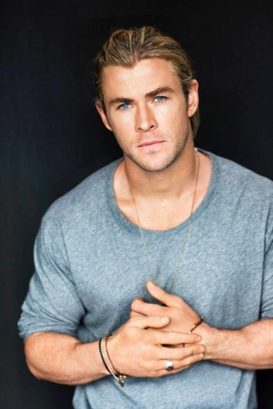
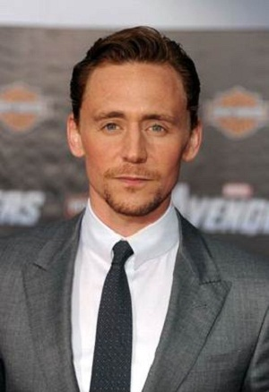
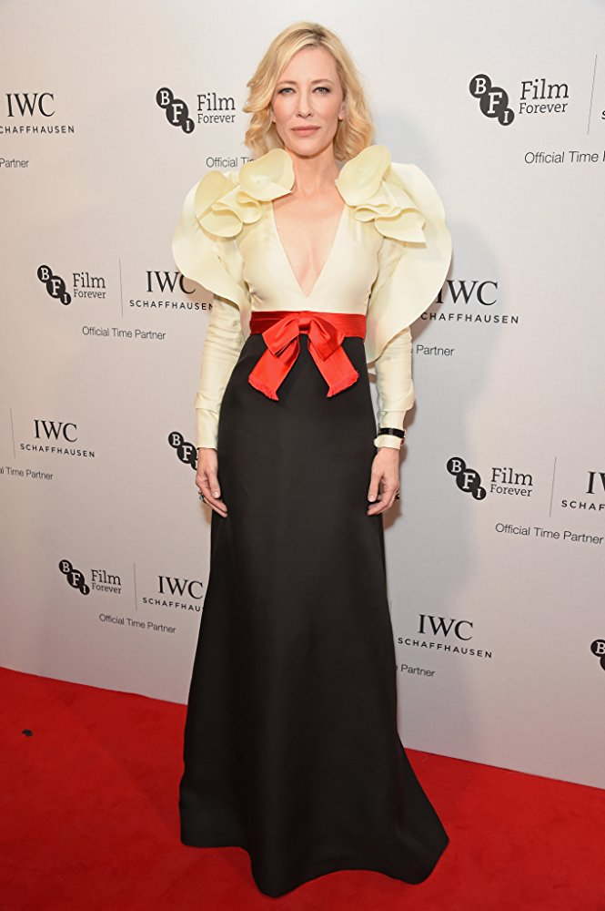
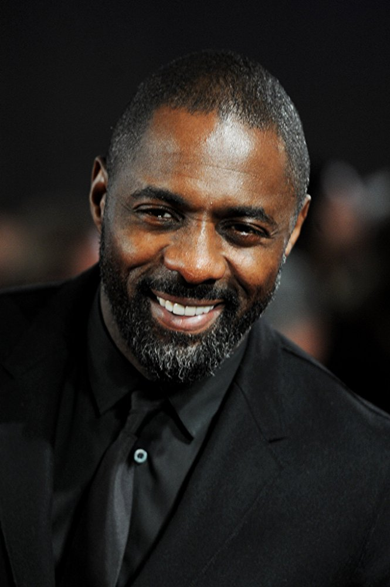
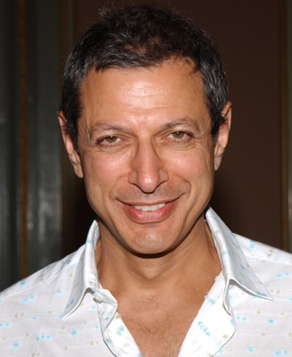
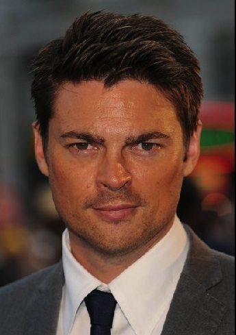
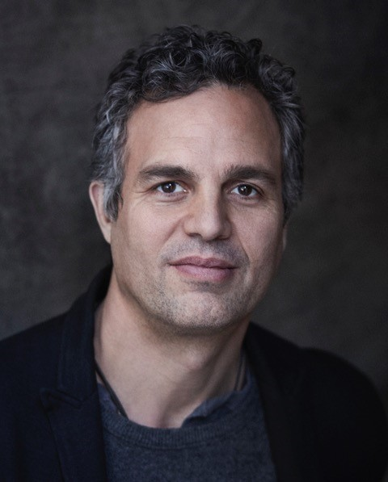
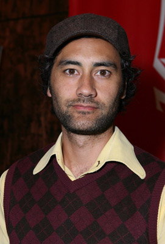

Main Characters |
|||
|---|---|---|---|
|  |
Chris Hemsworth |
Born August 11, 1983 in Melbourne, Victoria, Australia |
Thor |
|  |
Tom Hiddleston |
Born February 9, 1981 in Westminster, London, England, UK |
Loki |
|  |
Cate Blanchett |
Born May 14, 1969 in Melbourne, Victoria, Australia |
Hela |
|  |
Idris Elba |
Born September 6, 1972 in Hackney, London, England, UK |
Heimdall |
|  |
Jeff Goldblum |
Born October 22, 1952 in Pittsburgh, Pennsylvania, USA |
Grandmaster |
Tessa Thompson |
Born October 3, 1983 in Los Angeles, California, USA |
Valkyrie |
|
|  |
Karl Urban |
Born June 7, 1972 in Wellington, New Zealand |
Skurge |
|  |
Mark Ruffalo |
Born November 22, 1967 in Kenosha, Wisconsin, USA |
Bruce Banner - Hulk |

|
Anthony Hopkins |
Born December 31, 1937 in Margam, Port Talbot, West Glamorgan, Wales, UK |
Odin |
Click Here For The Full Cast |
Director |
|||
|  |
Taika Waititi |
Born August 16, 1975 in Wellington, New Zealand |
|